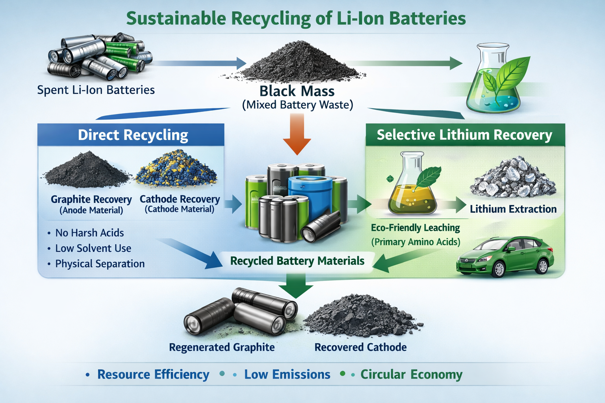
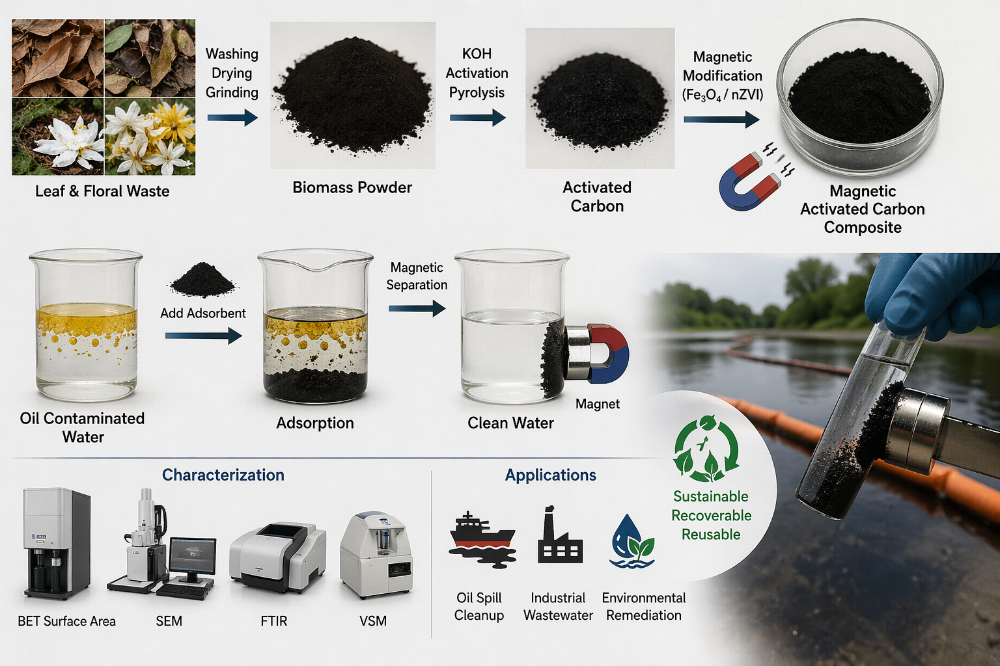
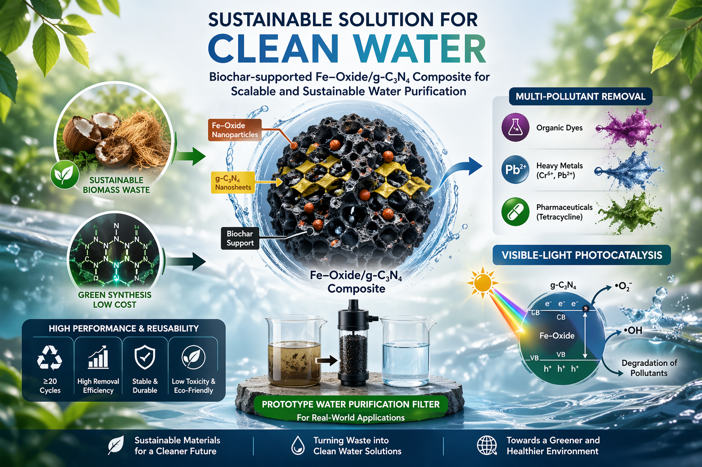
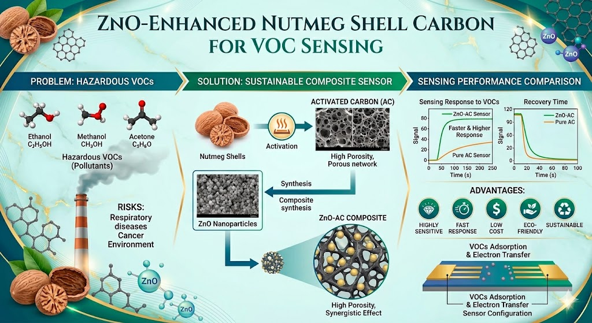

Energy | Resource Management | Environmental Stewardship | Engineering | AI | Waste-to-Wealth
The AERIS Group is an applied research group based at the Department of Nano Science Technology, Faculty of Technology, Wayamba University of Sri Lanka. We work at the intersection of materials science, environmental engineering and emerging technologies to develop sustainable solutions for real-world challenges. Our research is Japanese Funded and spans water remediation, waste-to-wealth, energy applications and resources — guided by a commitment to circular economy principles and environmental stewardship. The group brings together enthusiastic Research Assistants working on funded projects under close mentorship, with an emphasis on rigorous methodology and practical impact.




We expect to announce funding availability for the 2026/2027 round by 10th August 2026.
Please find the key details/documents required from the previous year (i.e., 2025/2026 round) application as a reference. Also note that, some requirements may change in the next funding cycle.
If you have an interesting research idea, please be ready with a proposal. We are happy to fund you.
Reference MaterialsDr Ashane Fernando (Lead)
Dr Manjula Wickramasinghe (Dean, FoT)
Prof. Jeewani Jayasinghe
Dr Murthi Kandanapitiye (HoD, DNST)
Dr Nadeeka Dilrukshi
AI | Water | Materials | Energy | Minerals
Email: ashanef@wyb.ac.lk